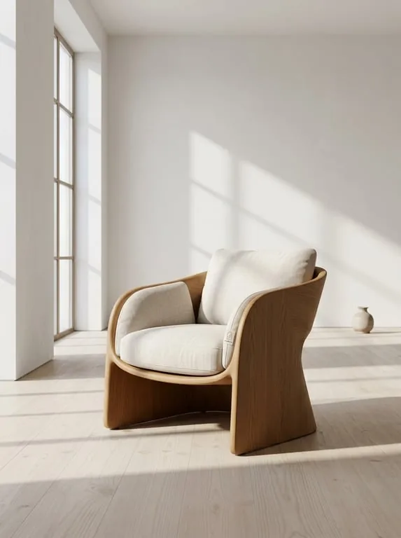
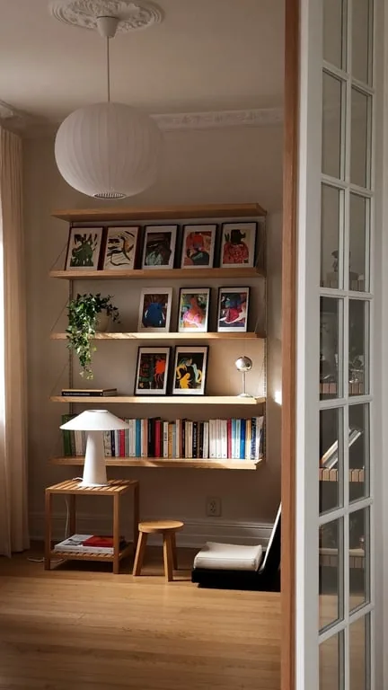

לינדן, דירות בתל אביב הישנה
דירות עם אור טוב.
אנחנו מוכרים כמה דירות בכל פעם, בבניינים משנות השלושים עד השישים, ומבקרים בכל אחת לפני שמפרסמים אותה.
בכל מודעה כתוב לאן פונים החלונות, איך המדרגות ומה השכנים סיפרו לנו.
לראות את הדירות
למכירה עכשיו
ארבע דירות, בכל אחת ביקרנו פעמיים.
- 01
רוטשילד 61
₪6,900,000
בית פתוח בשישי
- 02

מלצ׳ט 14
₪4,350,000
פנויה
- 03

ביאליק 9
₪3,600,000
פנויה
- 04

אנגל 3
₪8,200,000
במשא ומתן
איך אנחנו עובדים
לאט בכוונה, כדי ששום דבר לא יפתיע אחר כך.
מבקרים
פעמיים, באור בוקר ובאור ערב, לפני שאנחנו מסכימים למכור דירה.
כותבים
כל ליקוי שמצאנו נכנס למודעה, כך שהקונים מגיעים כבר יודעים.
מראים
בית פתוח אחד בשבוע, וביקורים פרטיים למי שמבקש.
סוגרים
עורכת הדין שלנו מכינה את החוזה, ואנחנו נשארים עד שהמפתחות עוברים ידיים.
ספרו לנו מה אתם מחפשים.
השאירו מספר ושעות שנוחות לכם, ואחד מאיתנו יתקשר באותו יום.